Change analysis for Congo, The Democratic Republic of the for
PRIMAP-hist v2.5.1_final compared to v2.5_final
Overview over
emissions by sector and gas
The following figures show the aggregate national total emissions
excluding LULUCF AR6GWP100 for the country reported priority scenario.
The dotted linesshow the v2.5_final data.
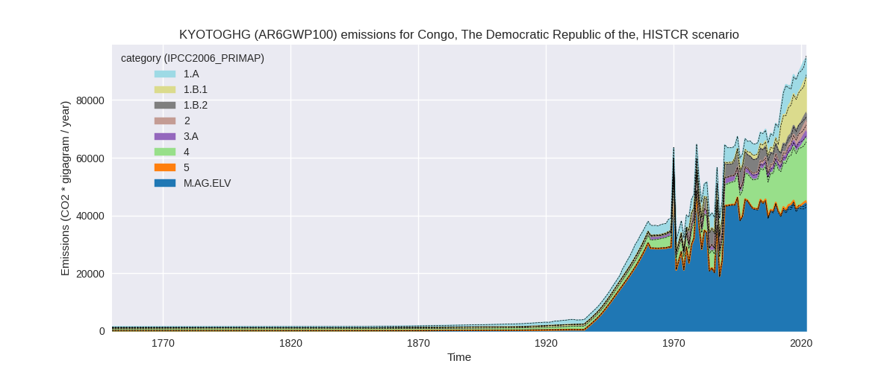
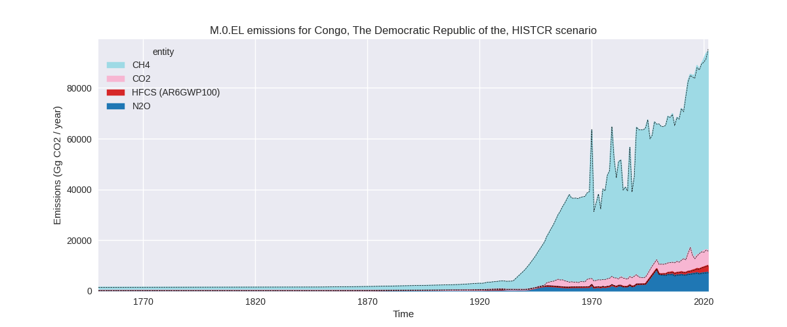
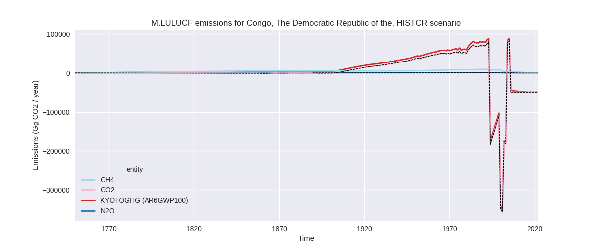
The following figures show the aggregate national total emissions
excluding LULUCF AR6GWP100 for the third party priority scenario. The
dotted linesshow the v2.5_final data.
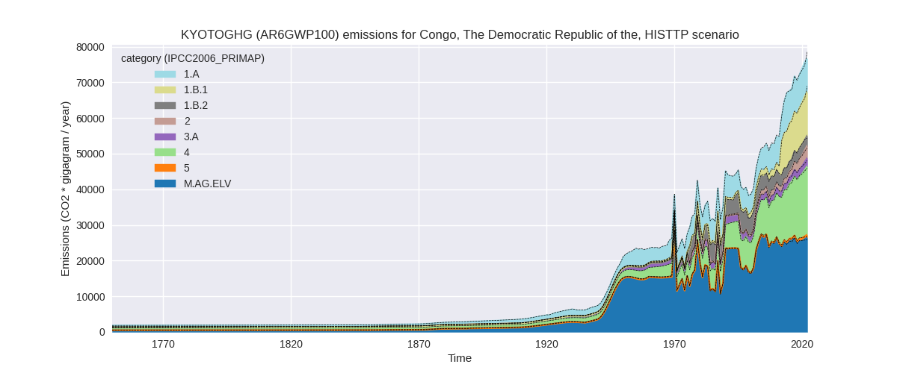
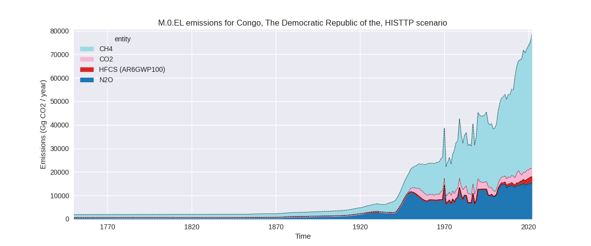
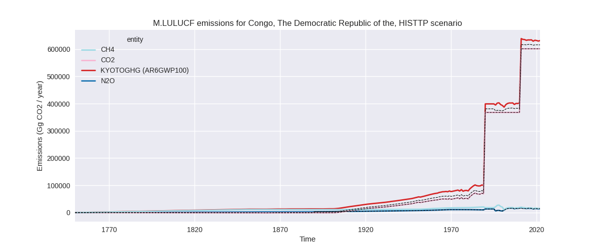
Overview over changes
In the country reported priority scenario we have the following
changes for aggregate Kyoto GHG and national total emissions excluding
LULUCF (M.0.EL):
- Emissions in 2022 have changed by -0.9%% (-891.81 Gg CO2 / year)
- Emissions in 1990-2022 have changed by 0.2%% (137.08 Gg CO2 / year)
In the third party priority scenario we have the following changes
for aggregate Kyoto GHG and national total emissions excluding LULUCF
(M.0.EL):
- Emissions in 2022 have changed by -2.4%% (-1878.66 Gg CO2 / year)
- Emissions in 1990-2022 have changed by -0.5%% (-272.08 Gg CO2 / year)
Most
important changes per scenario and time frame
In the country reported priority scenario the
following sector-gas combinations have the highest absolute impact on
national total KyotoGHG (AR6GWP100) emissions in 2022
(top 5):
- 1: 1.B.1, CH4 with -2401.62 Gg CO2 / year (-16.6%)
- 2: M.AG.ELV, CH4 with 1083.29 Gg CO2 / year (2.9%)
- 3: M.AG.ELV, N2O with 252.72 Gg CO2 / year (4.9%)
- 4: 3.A, CH4 with 205.33 Gg CO2 / year (10.2%)
- 5: 1.B.2, CO2 with 160.14 Gg CO2 / year (67.5%)
In the country reported priority scenario the
following sector-gas combinations have the highest absolute impact on
national total KyotoGHG (AR6GWP100) emissions in
1990-2022 (top 5):
- 1: M.AG.ELV, CH4 with 220.50 Gg CO2 / year (0.6%)
- 2: 2, CO2 with -87.59 Gg CO2 / year (-20.2%)
- 3: 1.A, CO2 with 37.87 Gg CO2 / year (1.1%)
- 4: 1.B.2, CH4 with -34.91 Gg CO2 / year (-1.0%)
- 5: M.AG.ELV, N2O with 31.77 Gg CO2 / year (0.7%)
In the third party priority scenario the following
sector-gas combinations have the highest absolute impact on national
total KyotoGHG (AR6GWP100) emissions in 2022 (top
5):
- 1: 1.B.1, CH4 with -2401.62 Gg CO2 / year (-16.6%)
- 2: M.AG.ELV, N2O with 392.22 Gg CO2 / year (3.1%)
- 3: 1.A, CH4 with -212.86 Gg CO2 / year (-3.4%)
- 4: 3.A, CH4 with 201.82 Gg CO2 / year (10.2%)
- 5: M.AG.ELV, CH4 with 181.35 Gg CO2 / year (1.4%)
In the third party priority scenario the following
sector-gas combinations have the highest absolute impact on national
total KyotoGHG (AR6GWP100) emissions in 1990-2022 (top
5):
- 1: M.AG.ELV, N2O with -88.60 Gg CO2 / year (-0.8%)
- 2: 2, CO2 with -87.59 Gg CO2 / year (-21.2%)
- 3: M.AG.ELV, CH4 with -61.74 Gg CO2 / year (-0.5%)
- 4: 1.B.2, CH4 with -34.91 Gg CO2 / year (-1.0%)
- 5: 1.B.1, CH4 with -29.90 Gg CO2 / year (-0.7%)
Notes on data changes
No country specific notes present for this changelog.
Changes by sector and gas
For each scenario and time frame the changes are displayed for all
individual sectors and all individual gases. In the sector plot we use
aggregate Kyoto GHGs in AR6GWP100. In the gas plot we usenational total
emissions without LULUCF. ## country reported scenario
2022
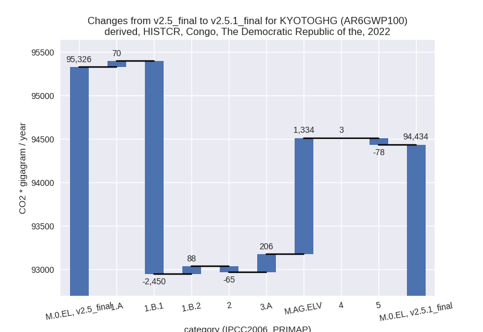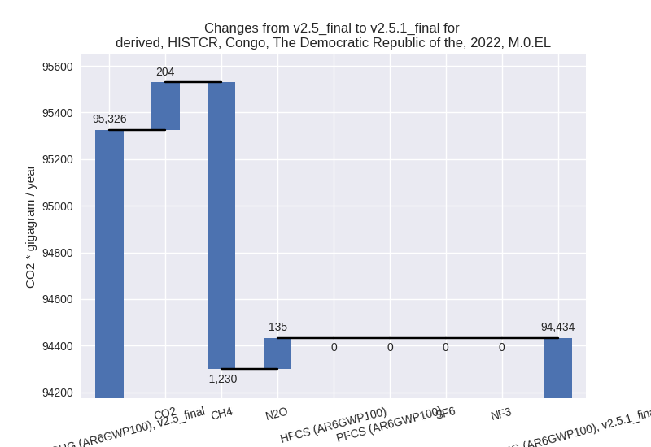
1990-2022
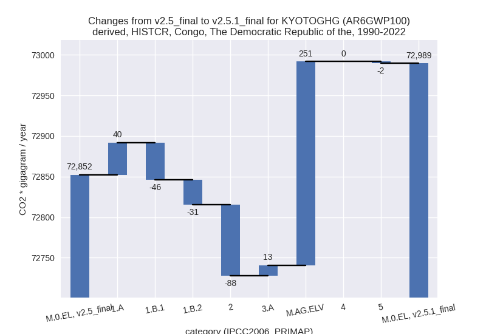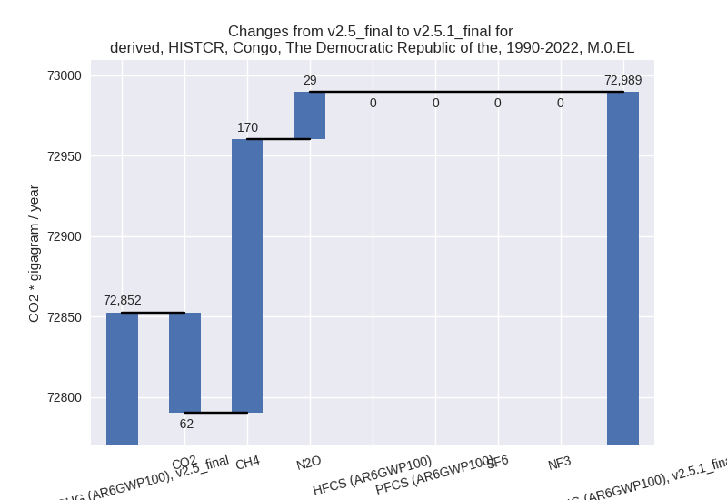
third party scenario
2022
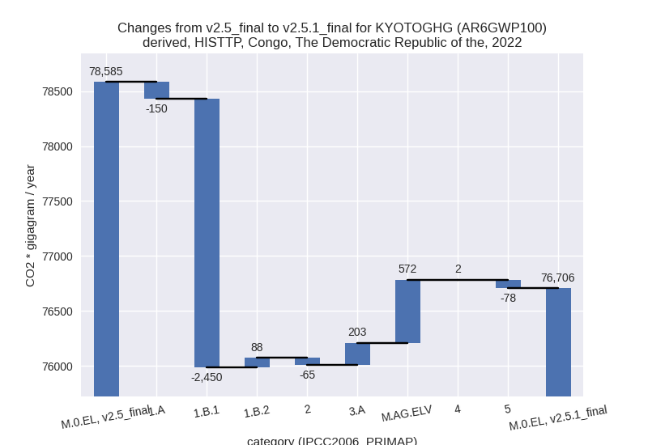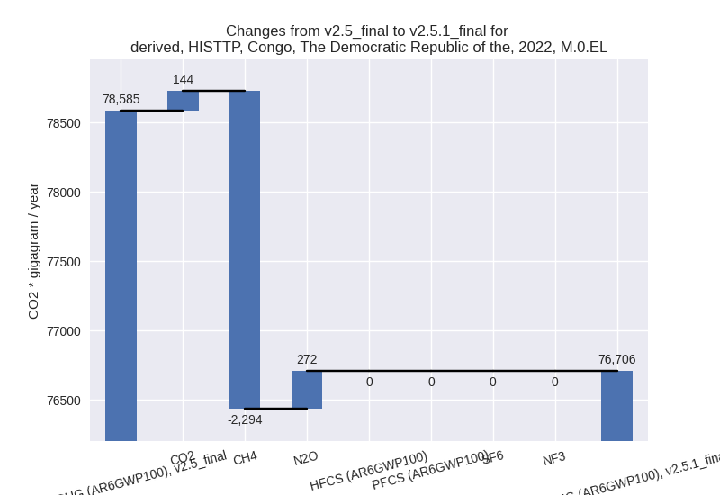
1990-2022
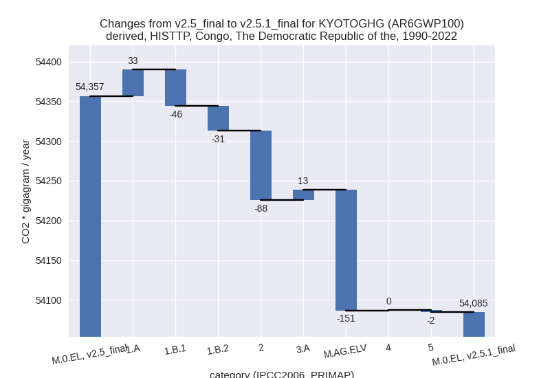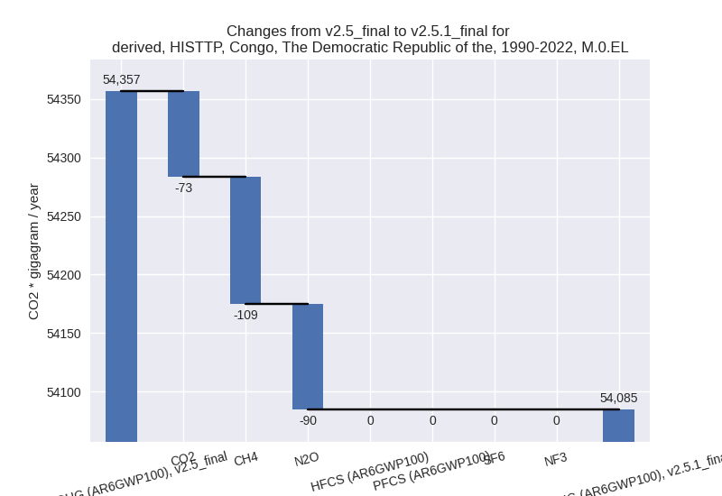
Detailed changes for the
scenarios:
country reported scenario
(HISTCR):
Most important changes
per time frame
For 2022 the following sector-gas combinations have
the highest absolute impact on national total KyotoGHG (AR6GWP100)
emissions in 2022 (top 5):
- 1: 1.B.1, CH4 with -2401.62 Gg CO2 / year (-16.6%)
- 2: M.AG.ELV, CH4 with 1083.29 Gg CO2 / year (2.9%)
- 3: M.AG.ELV, N2O with 252.72 Gg CO2 / year (4.9%)
- 4: 3.A, CH4 with 205.33 Gg CO2 / year (10.2%)
- 5: 1.B.2, CO2 with 160.14 Gg CO2 / year (67.5%)
For 1990-2022 the following sector-gas combinations
have the highest absolute impact on national total KyotoGHG (AR6GWP100)
emissions in 1990-2022 (top 5):
- 1: M.AG.ELV, CH4 with 220.50 Gg CO2 / year (0.6%)
- 2: 2, CO2 with -87.59 Gg CO2 / year (-20.2%)
- 3: 1.A, CO2 with 37.87 Gg CO2 / year (1.1%)
- 4: 1.B.2, CH4 with -34.91 Gg CO2 / year (-1.0%)
- 5: M.AG.ELV, N2O with 31.77 Gg CO2 / year (0.7%)
Changes in the main sectors for aggregate KyotoGHG (AR6GWP100)
are
- 1: Total sectoral emissions in 2022 are 21643.43 Gg
CO2 / year which is 22.9% of M.0.EL emissions. 2022 Emissions have
changed by -9.6% (-2292.27 Gg CO2 /
year). 1990-2022 Emissions have changed by -0.3% (-37.19 Gg CO2 / year). For 2022 the
changes per gas
are:
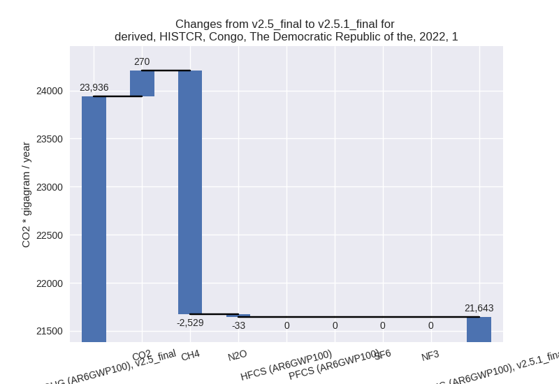
The changes come from the following subsectors:
- 1.A: Total sectoral emissions in 2022 are 6614.97
Gg CO2 / year which is 30.6% of category 1 emissions. 2022 Emissions
have changed by 1.1% (69.63 Gg CO2 /
year). 1990-2022 Emissions have changed by 0.8% (39.56 Gg CO2 / year).
- 1.B.1: Total sectoral emissions in 2022 are
12222.61 Gg CO2 / year which is 56.5% of category 1 emissions. 2022
Emissions have changed by -16.7%
(-2450.27 Gg CO2 / year). 1990-2022 Emissions have changed by -1.0% (-45.85 Gg CO2 / year). For 2022 the
changes per gas
are:
There is no subsector information available in PRIMAP-hist.
- 1.B.2: Total sectoral emissions in 2022 are 2805.85
Gg CO2 / year which is 13.0% of category 1 emissions. 2022 Emissions
have changed by 3.3% (88.38 Gg CO2 /
year). 1990-2022 Emissions have changed by -0.8% (-30.90 Gg CO2 / year). For 2022 the
changes per gas
are:
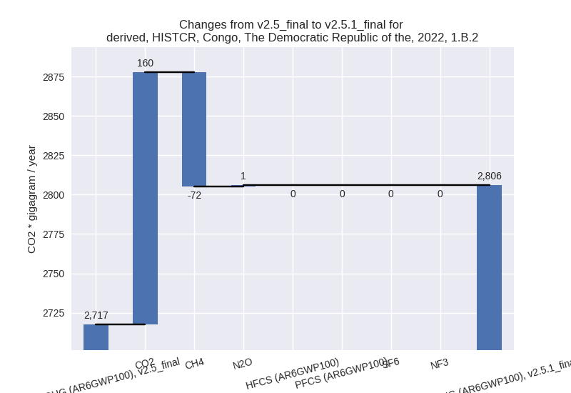
There is no subsector information available in PRIMAP-hist.
- 2: Total sectoral emissions in 2022 are 3608.75 Gg
CO2 / year which is 3.8% of M.0.EL emissions. 2022 Emissions have
changed by -1.8% (-64.87 Gg CO2 /
year). 1990-2022 Emissions have changed by -6.6% (-87.59 Gg CO2 / year). For
1990-2022 the changes per gas
are:
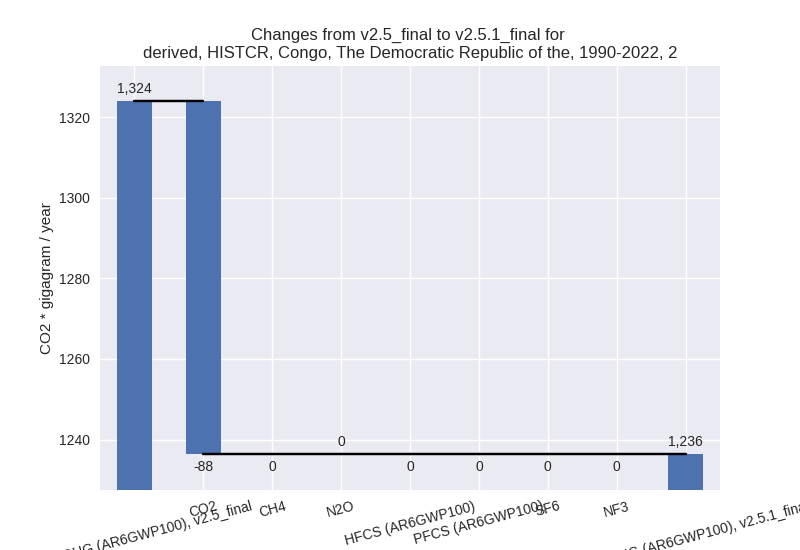
- M.AG: Total sectoral emissions in 2022 are 46582.77
Gg CO2 / year which is 49.3% of M.0.EL emissions. 2022 Emissions have
changed by 3.4% (1540.44 Gg CO2 /
year). 1990-2022 Emissions have changed by 0.6% (264.14 Gg CO2 / year). For 2022 the
changes per gas
are:
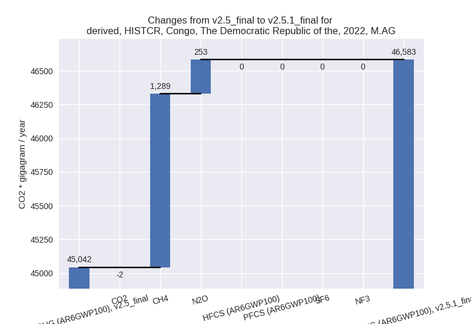
The changes come from the following subsectors:
- 3.A: Total sectoral emissions in 2022 are 2354.24
Gg CO2 / year which is 5.1% of category M.AG emissions. 2022 Emissions
have changed by 9.6% (206.10 Gg CO2
/ year). 1990-2022 Emissions have changed by 0.7% (13.00 Gg CO2 / year). For 2022 the
changes per gas
are:
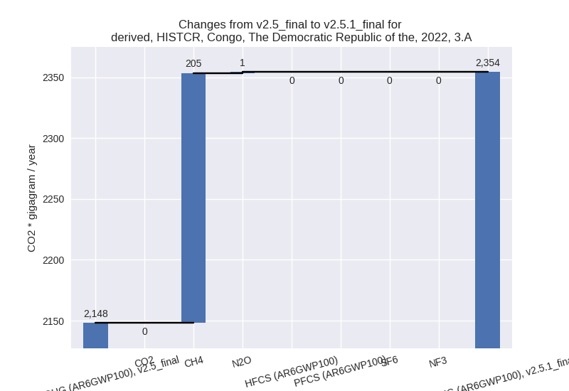
There is no subsector information available in PRIMAP-hist.
- M.AG.ELV: Total sectoral emissions in 2022 are
44228.54 Gg CO2 / year which is 94.9% of category M.AG emissions. 2022
Emissions have changed by 3.1%
(1334.33 Gg CO2 / year). 1990-2022 Emissions have changed by 0.6% (251.14 Gg CO2 / year). For 2022 the
changes per gas
are:
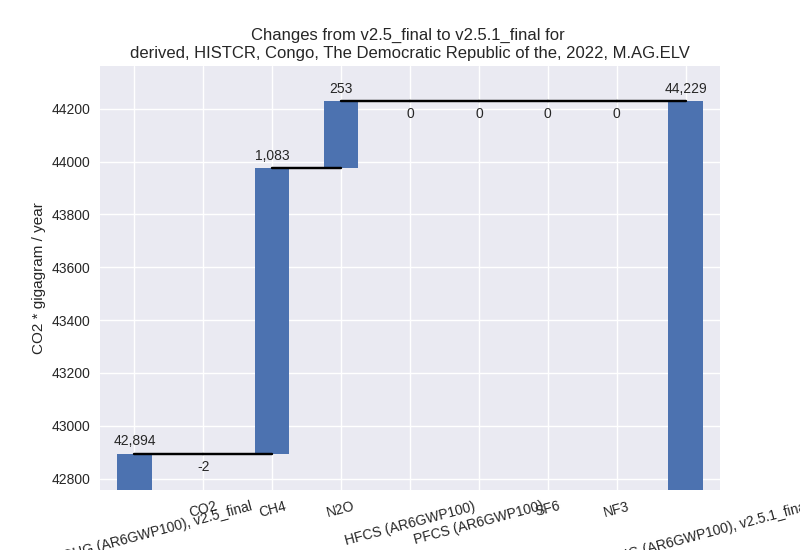
There is no subsector information available in PRIMAP-hist.
- 4: Total sectoral emissions in 2022 are 21756.96 Gg
CO2 / year which is 23.0% of M.0.EL emissions. 2022 Emissions have
changed by 0.0% (2.97 Gg CO2 /
year). 1990-2022 Emissions have changed by 0.0% (0.09 Gg CO2 / year).
- 5: Total sectoral emissions in 2022 are 842.10 Gg
CO2 / year which is 0.9% of M.0.EL emissions. 2022 Emissions have
changed by -8.5% (-78.09 Gg CO2 /
year). 1990-2022 Emissions have changed by -0.5% (-2.37 Gg CO2 / year). For 2022 the
changes per gas
are:
third party scenario (HISTTP):
Most important changes
per time frame
For 2022 the following sector-gas combinations have
the highest absolute impact on national total KyotoGHG (AR6GWP100)
emissions in 2022 (top 5):
- 1: 1.B.1, CH4 with -2401.62 Gg CO2 / year (-16.6%)
- 2: M.AG.ELV, N2O with 392.22 Gg CO2 / year (3.1%)
- 3: 1.A, CH4 with -212.86 Gg CO2 / year (-3.4%)
- 4: 3.A, CH4 with 201.82 Gg CO2 / year (10.2%)
- 5: M.AG.ELV, CH4 with 181.35 Gg CO2 / year (1.4%)
For 1990-2022 the following sector-gas combinations
have the highest absolute impact on national total KyotoGHG (AR6GWP100)
emissions in 1990-2022 (top 5):
- 1: M.AG.ELV, N2O with -88.60 Gg CO2 / year (-0.8%)
- 2: 2, CO2 with -87.59 Gg CO2 / year (-21.2%)
- 3: M.AG.ELV, CH4 with -61.74 Gg CO2 / year (-0.5%)
- 4: 1.B.2, CH4 with -34.91 Gg CO2 / year (-1.0%)
- 5: 1.B.1, CH4 with -29.90 Gg CO2 / year (-0.7%)
Changes in the main sectors for aggregate KyotoGHG (AR6GWP100)
are
- 1: Total sectoral emissions in 2022 are 24422.52 Gg
CO2 / year which is 31.8% of M.0.EL emissions. 2022 Emissions have
changed by -9.3% (-2511.90 Gg CO2 /
year). 1990-2022 Emissions have changed by -0.3% (-43.48 Gg CO2 / year). For 2022 the
changes per gas
are:
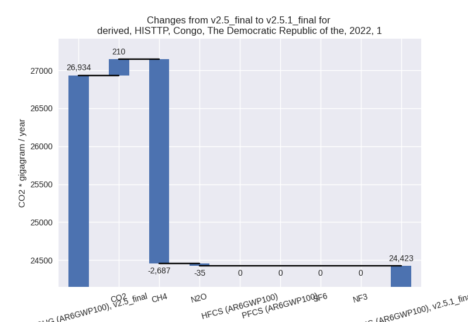
The changes come from the following subsectors:
- 1.A: Total sectoral emissions in 2022 are 9394.06
Gg CO2 / year which is 38.5% of category 1 emissions. 2022 Emissions
have changed by -1.6% (-150.00 Gg
CO2 / year). 1990-2022 Emissions have changed by 0.5% (33.27 Gg CO2 / year).
- 1.B.1: Total sectoral emissions in 2022 are
12222.61 Gg CO2 / year which is 50.0% of category 1 emissions. 2022
Emissions have changed by -16.7%
(-2450.27 Gg CO2 / year). 1990-2022 Emissions have changed by -1.0% (-45.85 Gg CO2 / year). For 2022 the
changes per gas
are:
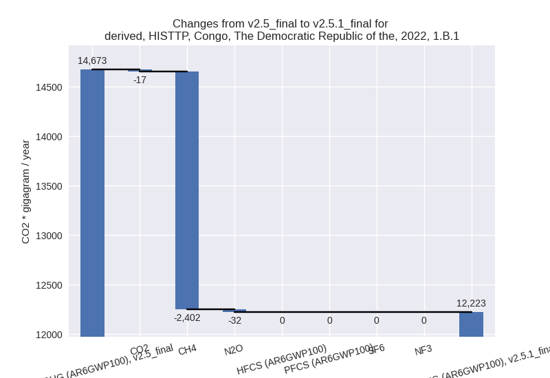
There is no subsector information available in PRIMAP-hist.
- 1.B.2: Total sectoral emissions in 2022 are 2805.85
Gg CO2 / year which is 11.5% of category 1 emissions. 2022 Emissions
have changed by 3.3% (88.38 Gg CO2 /
year). 1990-2022 Emissions have changed by -0.8% (-30.90 Gg CO2 / year). For 2022 the
changes per gas
are:
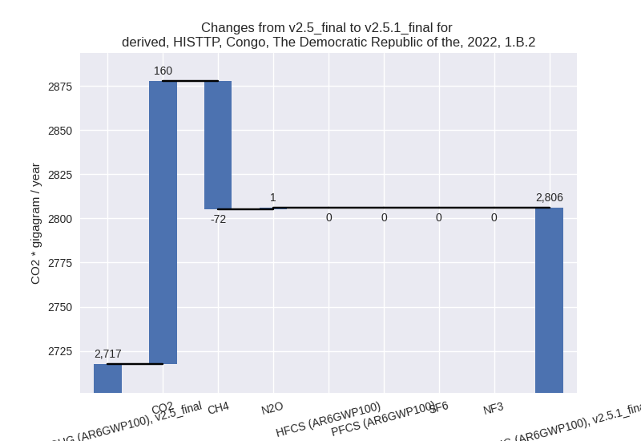
There is no subsector information available in PRIMAP-hist.
- 2: Total sectoral emissions in 2022 are 3495.35 Gg
CO2 / year which is 4.6% of M.0.EL emissions. 2022 Emissions have
changed by -1.8% (-64.87 Gg CO2 /
year). 1990-2022 Emissions have changed by -6.7% (-87.59 Gg CO2 / year). For
1990-2022 the changes per gas
are:
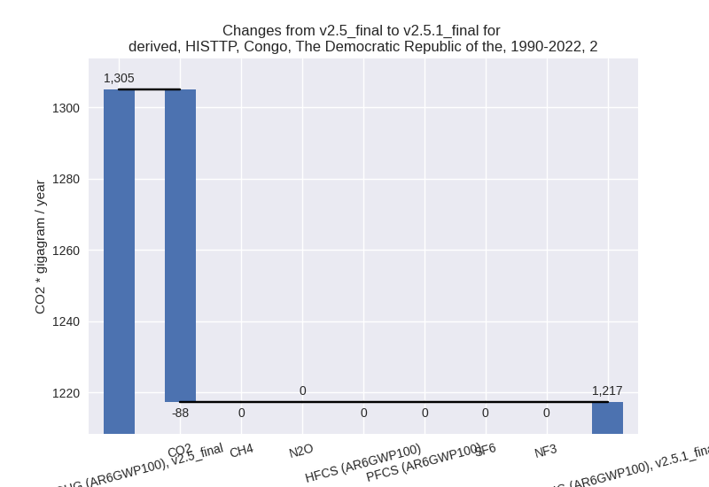
- M.AG: Total sectoral emissions in 2022 are 28746.95
Gg CO2 / year which is 37.5% of M.0.EL emissions. 2022 Emissions have
changed by 2.8% (774.49 Gg CO2 /
year). 1990-2022 Emissions have changed by -0.5% (-138.69 Gg CO2 / year). For 2022
the changes per gas
are:
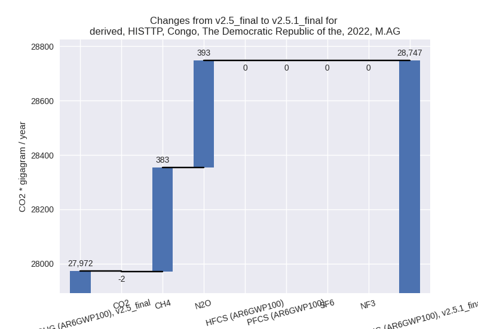
The changes come from the following subsectors:
- 3.A: Total sectoral emissions in 2022 are 2316.17
Gg CO2 / year which is 8.1% of category M.AG emissions. 2022 Emissions
have changed by 9.6% (202.59 Gg CO2
/ year). 1990-2022 Emissions have changed by 0.7% (12.78 Gg CO2 / year). For 2022 the
changes per gas
are:
There is no subsector information available in PRIMAP-hist.
- M.AG.ELV: Total sectoral emissions in 2022 are
26430.78 Gg CO2 / year which is 91.9% of category M.AG emissions. 2022
Emissions have changed by 2.2%
(571.91 Gg CO2 / year). 1990-2022 Emissions have changed by -0.6% (-151.47 Gg CO2 / year). For 2022
the changes per gas
are:
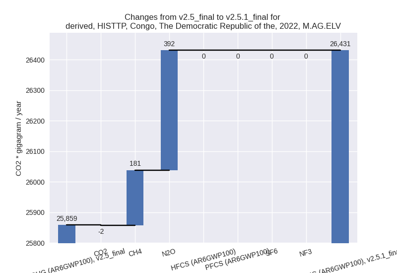
There is no subsector information available in PRIMAP-hist.
- 4: Total sectoral emissions in 2022 are 19198.94 Gg
CO2 / year which is 25.0% of M.0.EL emissions. 2022 Emissions have
changed by 0.0% (1.70 Gg CO2 /
year). 1990-2022 Emissions have changed by 0.0% (0.05 Gg CO2 / year).
- 5: Total sectoral emissions in 2022 are 842.10 Gg
CO2 / year which is 1.1% of M.0.EL emissions. 2022 Emissions have
changed by -8.5% (-78.09 Gg CO2 /
year). 1990-2022 Emissions have changed by -0.5% (-2.37 Gg CO2 / year). For 2022 the
changes per gas
are:
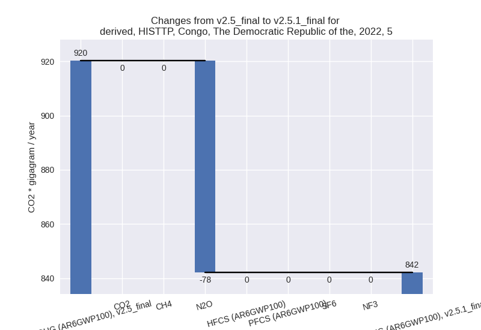